BERT时代下的摘要提取长文总结¶
1 概述¶
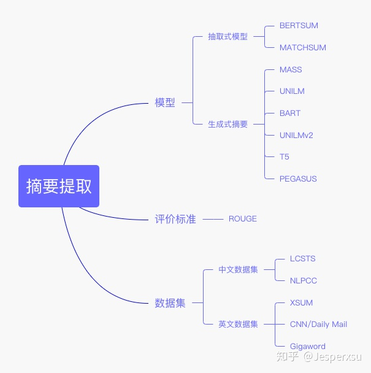
根据生成方式可以分为生成式摘要和抽取式摘要。
- 抽取式摘要：找到一个文档中最重要的几个句子并对其进行拼接。
- 生成式摘要：是一个序列生成问题，通过源文档序列 \( x=[x_{1},...,x_{n}] \)生成序列摘要序列 \( y=[y_{1},...,y_{m}] \)。
2 抽取式摘要¶
2.1 bertsum¶
2.1.1 简述¶
- 全称: Fine-tune BERT for Extractive Summarization
- 时间：2019.09.05
- 团队: University of Edinburgh
2.1.2 模型框架¶
- 背景：预训练模型BERT在多个NLP任务上的表现效果突出
- 主要贡献: 将BERT用于抽取式摘要中
每个句子的句首设置一个token [CLS]用来判断该句是否为summary的句子。为了保证每条句子的token type一致性以及呈现句子间的差异性，因而模型Inter val Segment Embeddings原有输入 \( [sent_{1},sent_{2},sent_{3},sent_{4},sent_{5}] \)将变有 \( [E_{A},E_{B},E_{A},E_{B},E_{A}] \)。
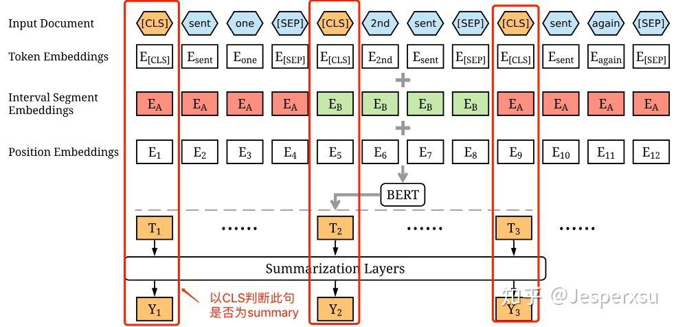图2.1.1 BERTSUM的模型框架
通过BERT获取到每个句子的句向量后，本文本额外新增了几种方式捕获文档级特征用于摘要提取。1） 简单分类器 ：[CLS]经BERT产生的[T]直接用线性分类器来判断此句是否为摘要。2） 句子间的Transformer ：将多个Transformer层只应用于句子表示，从BERT输出中抽取文档级特征。3） RNN序列标注 ：BERT输出T经LSTM层，学习特定摘要特征，判断BERT输出T是否为摘要，并学习到了序列特征。
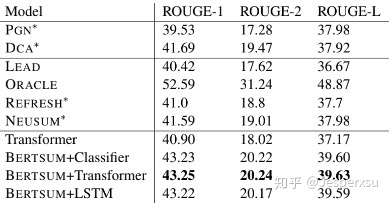图2.1.2 BERTSUM模型实验结果
2.2 MATCHSUM¶
2.2.1 简述¶
- 全称: Extractive Summarization as Text Matching
- 时间：2020.04.19
- 团队：复旦大学邱锡鹏团队
2.2.2 模型框架¶
- 背景: 传统抽取式摘要模型都是基于句子级提取的，即未曾考虑句子间的关系，对所有句子逐个打分，最后取topn的句子为摘要
- 主要贡献
- 考虑句子间的关系，通过候选句间的组合句来抽取摘要
- 基于摘要与原文档在语义上应该有较大匹配度的考量，本文提出了基于候选句间的组合句与原文档的相似度来判断文档摘要的模型
本文首先对六个摘要提取数据集进行分析，验证了句子级得分高的摘要并不是摘要级得分最高的。如果仅以句子级，容易产生pearl-summary, 即虽然句子得分较低，但其实是较好的摘要，作者称为沧海遗珠。
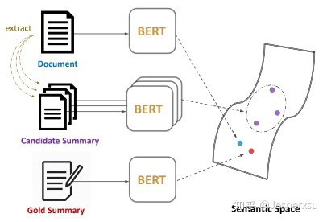图2.2.1 Matchsum模型框架
本都通过两个阶段来提取摘要：1） 提取候选摘要句 ：基于句子级对句子打分，选择 \( m \)个候选句（代码中采用Bertsum的方式提取句子级摘要），然后从个句子中选择 \( n \)(n可以有多个值)，最终选择了 \( C_m^n \)个摘要级组合（代码中 \( m \)为5， \( n \)为2和3） 2） 基于语义匹配选择最佳摘要 : 基于提取出摘要级组合，与原文本计算相似度。本文考虑了两上loss来finetune，一个是基于候选摘要与原文档的相似度，其目标函数为
\( \mathcal L_1 = max(0,f(D,C)-f(D,C^*)+\gamma_1) \\ \)
另一个考虑候选摘要之间的差异性，即基于margin loss的思想，认为得分靠前的与得分排后的有较大的差民，其损失函数可表示为
\( \mathcal L_2 = max(0,f(D,C_j)-f(D,C_i)+(j-i)*\gamma_2 \\ \)
最终finetune的目标函数可表示为 \( \mathcal L = \mathcal L_1 + \mathcal L_2 \)
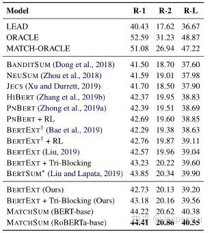图2.2.2 Matchsum模型实验结果
3 生成式式摘要¶
3.1 MASS¶
3.1.1 简述¶
- 全称: MASS: Masked Sequence to Sequence Pre-training for Language Generation
- 时间：2019.06.21
- 团队：
3.1.2 模型架构¶
- 背景：双向的BERT在NLU上表现突出，而GPT仅在单向的NLG上表现较好，两者间并未很好的结合。
- 主要贡献：提出了一种新的Pre-train seq2seq任务的方法，在预训练阶段让encoder和decoder部分同时学习，首次实现了BERT+生成模型的大一统。
MASS通过以 \( x^{\backslash u:v} \)作输入来预测 \( x^{u:v} \)。以极大似然函数作为目标函数:
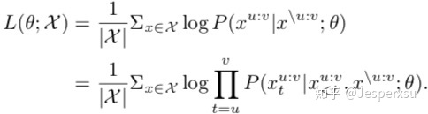
注: \( x^{u:v} \)为以句子位置 \( u \)为起点， \( v \)为终点； \( x^{\backslash u:v} \)为以句子位置 \( u \)为起点， \( v \)为终点之外的部分
如图1所示,输入8个token的序列中 \( x_{3}x_{4}x_{5}x_{6} \)被mask掉。注意到，模型仅仅预测mask的部分 ，并且在decoder的4-6位置给定 \( x_{3}x_{4}x_{5} \)作为输入，其它位置用特殊字符[M]作为输入。由于我们的方法对于任何基于encode-decoder的神经网络框架都适用，并且考虑到 Transormer 在序列学习达到了SOTA,本文选择了 Transormer.

其实，基于MLM的BERT模型和标准的语言模型GPT都可以被视作MASS的特殊情况。
当 k=1 的时候，MASS可被视作BERT，如图所示，Encoder只mask \( x_{5} \),Decoder无任何输入，而预测 , 可以认为整个结构只利用了Encoder部分

当 k=m (句子长度)的时候，MASS可被视作GPT，如图所示，Encoder全部MASK无任何输入, 可以认为整个结构只利用了Decoder部分

 图3.1.1 MASS模型实验结果
图3.1.1 MASS模型实验结果
3.2 UNILM¶
3.2.1 简述¶
- 全称: Unified Language Model Pre-training for Natural Language Understanding and Generation
- 时间：2019.10.15
- 团队：Microsoft Research
3.2.2 模型架构¶
背景: 与MASS想法一致，同样是在NLU和NLG任务中寻求大一统
主要贡献： UNILM仅采用了transformer的encoder部分，然于基于mask矩阵变化，实现了NLU和NLG多个任务在同一个框架下训练 。
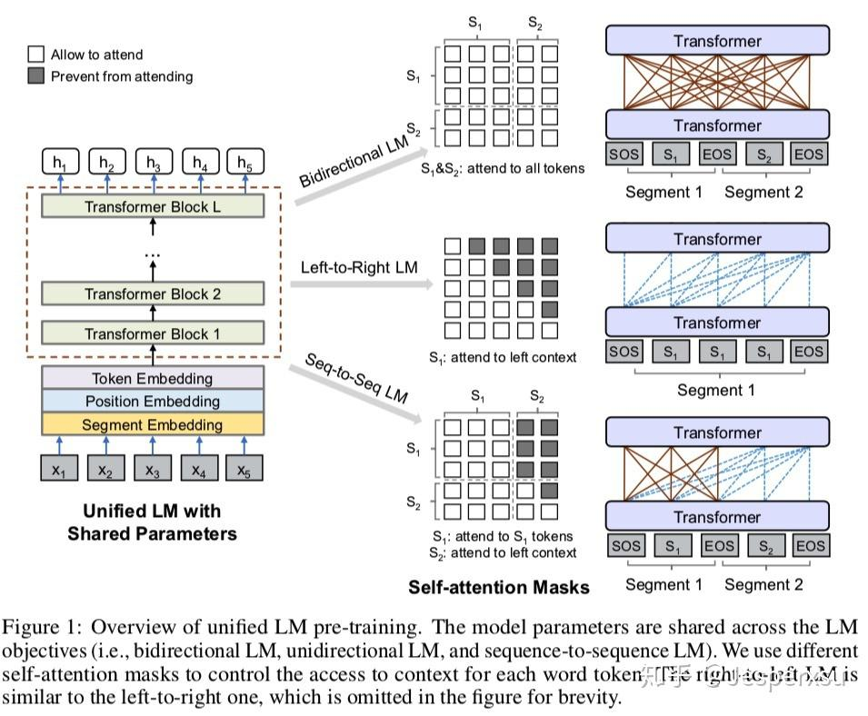
这里应该是一个batch里先用⅓的数据训练双向语言模型更新参数，然后再用⅓的数据进行序列到序列语言模型更新参数，再用⅙的数据从左到右的单向语料模型更新参数，最后用⅙的数据从右向左的单向语言模型更新参数。这里与multi-task些许不同，mutli-task是综合所有的loss，然后更新参数，而MASS是通过某个任务计算loss，更新参数后，再用另一个任务计算loss，更新参数。此处是挺新的一个想法，算是mutil-task的另一种变形吧。
基于四个LM任务目标预训练四个完形填空任务。在完形填空任务中，我们随机选择一些WordPiece token作为输入，并用特殊token [MASK]来替换它们。然后我们通过Transformer network来预测masked的token.
 图3.2.1 UNILM实验结果
图3.2.1 UNILM实验结果
3.3 BART¶
3.3.1 简述¶
- 全称：Pre-training with Extracted Gap-sentences for Abstractive Summarization（简称 PEGASUS ，翻译为 天马 ，Google家的 取名艺术 ，很强）
- 时间：2020.07.10
- 团队：Google Research
3.3.2 Pre-training BART¶
BART的预训练是在于破坏原文档然后优化重构loss ，通过交叉熵来计算decoder输出与原文档的差异。极端情况下，当原文档信息全部丢失时，BART相当于语言模型。
 图3.3.1 BART预训练方式
图3.3.1 BART预训练方式
BART采用了多种方式破坏原文档，即采用了多种Noise.
- Token Masking 随机替换原始token为[MASK]
- Token Deletion 随机删除输入的token。相比较于Token Masking，模型必须决定哪个位置是遗漏的。
- Text Infilling Text infilling是基于spanBERT的思路，取连续的token用[MASK]替换，span的长度服从 \( \lambda=3 \)的泊松分布。特殊情况下，当span长度为0时，相当于插入了一个mask。
- Sentence Permutation 打乱文档中句子的顺序。
- Document Rotation 随机选择一个token,然后旋转文本使得新的文本以这个token开头。此任务的目的用于判别文本的开头。
3.3.3 Fine-tuning BART¶
3.3.3.1 Sequence Classification Tasks¶
对于序列分类（文本分类）任务，encoder和decoder部分都用相同的输入，将deocoder最后一个节点用于多类别线性分类器中。此方法与BERT的CLS 较为类似；区别在于,BART在decoder部分最后增加了一个token，如此，便可获得来自完整输入的解码信息。（见图）
 图3.3.2 BART在文本分类上finetune的方式
图3.3.2 BART在文本分类上finetune的方式
3.3.3.2 Token Classification Tasks
对于序列标注任务，同样是在decoder和encoder采用相同的文本输入，以decoder的隐藏节点输出有于预测每个节点的类别。
3.3.3.3 Sequence Generation Tasks¶
由于BART的模型框架本身就采用了自回归方式，因而在finetune序列生成任务时，可直接在encoder部分输入原始文本，decoder部分用于预测待生成的文本。
3.3.3.4 Machine Translation¶
BART预训练模型同样也可用于将其它语言翻译为英文（BART的预训练模型是基于英语来训练的）。
先前的研究工作已经表明，在机器翻译中，encoder部分融合预训练模型能带来较大的效果提升，然后在decoder部分却受到限制。本文本表明在仅仅在encoder更换部分参数，就可利用到整个BART模型（包括encoder和decoder）。
更准确地说，本文替换encoder的embedding layer的参数为随机初始化所得（因输入语言不再不预训练模型采用的英语）。然后，整个finetue阶段便可分为两步：1）先冻结BART的大部分参数，仅仅更新encoder部分的randomly initialized encoder和BART positional embeddings，以及输入到BART的第一层self-attention映射矩阵。2）更新BART的全部参数，这一步，仅需迭代几次即可。
 图3.3.3 BART机器翻译finetune的模型结构
图3.3.3 BART机器翻译finetune的模型结构
3.3.4 实验结果¶
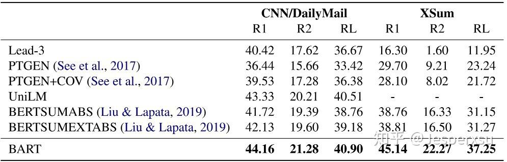 表3.3.1 文本摘要上实验结果
3.4 UNILMv2¶
3.4.1 简述¶
- 全称：Pseudo-Masked Language Models for Unified Language Model Pre-Training
- 发表时间: 2020.02.28
- 团队：微软
3.4.2 模型架构¶
对于给定的输入，随机替换部分token并用[M]来代替，那么训练目标是基于Transformer的输出来预测。如表1所示，我们将MLM类模型分成了自编码（AE）,自回归（AR），部分自回归（PAR）。它们之间主要的不同是MASKED token排列方式。本文本在预训练上同时采用了AE和PAR,并且， 在AE和AR的MASKED的位置是一致的 ，也就是说，在MASKED位置同时用到了自回归和自编码。
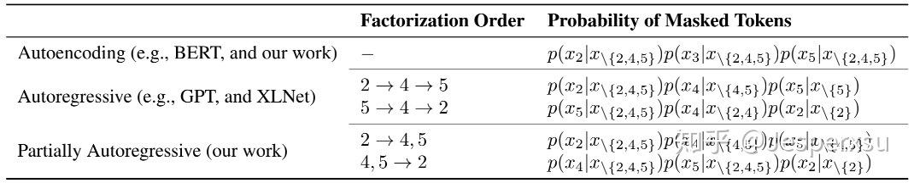表3.4.1 AE,AR和PAR的目标函数比较
3.4.2.1 AUTOENCODING MODELING¶
自编码方式是基于上下文独立来预测MASKED的token,这点与BERT一致。给定原始输入 \( x=x_1\cdot\cdot\cdot x_{|x|} \)，masked token位置为 \( M=m_1\cdot\cdot\cdot m_{|M|} \), masked token联合概率为 \( \prod_{m\in M}P(x_{m}|x_{\backslash M}) \), 此时 \( x_M=\{x_m\}_{m\in M} \)。自编码的损失函数可定义为
\( \sum_{x\in D} log \prod_{m\in M} p(x_m|x_{\backslash M}) \\ \)
3.4.2.2 PARTIALLY AUTOREGRESSIVE MODELING¶
 图3.4.1 AE,AR和PAR的比较
图3.4.1 AE,AR和PAR的比较
我们提出了部分自回归的MLM预训练模型。在分解的步骤中，模型可以预测一个或者多个token。以 \( M=<M_1,\cdot\cdot\cdot,M_{|M|}> \) 表示排列顺序，此时 \( $M_i={m_1^{i},\cdot\cdot\cdot,m^i_{|M|}} \) 表示在第 \( i \) 分解步骤中mask的位置。特殊情况下，如果所有分解步中只包含一个masked token(即 \( |M_i|=1 \) ),模型将变成自回归模型。
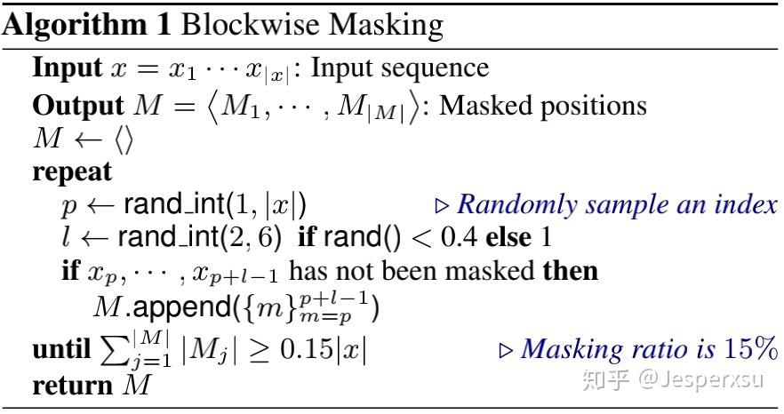
在本文中，为了形成语言自回归模型，在分解步中masked的位置变成span,而不是单一token。那么masked的token就可用下式表示
\( p(x_M|x\backslash M) = \prod_{i=1}^{|M|}p(x_{M_i}|x\backslash {M_{\geq i}}) = \prod_{i=1}^{|M|}\prod_{m\in {M_i}}p(x_m|x\backslash {M_{\geq i}}) (5)\\ \)
部分自回归预训练loss就可定义为
\( \mathcal L_{PAR} = - \sum_{x\in \mathcal D} \mathbb E_{M} log p(x_M|x_{\backslash M}) \\ \)
上式中， \( E_{M} \)表示分解步的期望值 ，然后在实际预训练中，本文每条样本随机抽取一种分解步，而不是计算期望（为了减少降低计算成本）。
3.4.2.3 Pseudo-Masked LM¶
公式（5）表明部分自回归语言模型分因式分解是基于不同上下文的。在本模型中，MLM模型是可直接基于Masked token直接使用的，而为了部分自回归预训练模型可行，我们还得对每个因式分解步构造一个新的完形填空实例。因而，我们提出了一个新的伪MLM模型训练（称为PMLM）来克服这个问题。
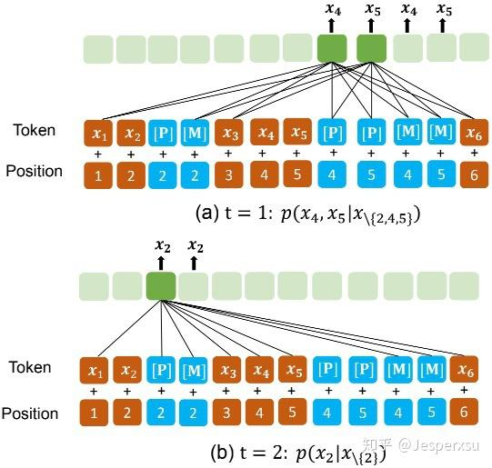图3.4.2 以分解步4,5至2为例，展示了[P]和[M]的应用方式
对于表1最后一个例子，图4展示了PMLM模型如何进行偏自回归预测。不再像 vanilla MLM采用mask来替换原始的token,本文本对原有的输入token保持不变，同时在应该MASK的词上添加伪MASK。 对于每个masked token, 我们在其对应的位置插入了[P] token 。[P]的顶层隐藏层节点采用softmax分类器用于MLM预测。注意到位置信息在Transformer中是通过position embeddings进行编码的，因而模型组件是顺序无关的(主要指输入的顺序)。换句话说，无论一个tokedn出现在输入句子中的任何地方，token的位置信息只由其position embedding来决定。因而， 我们可分配相同的位置信息给两个token(解释了增加P token在位置上的合理性) ，因而Transformer会认为这两个token在同一个位置上。
 图3.4.3 以分解步4,5至2为例，展示了MASK矩阵的结构
图3.4.3 以分解步4,5至2为例，展示了MASK矩阵的结构
Vanilla MLM(原生MLM)模型允许所有token都能看到其它token的信息，同时PMLM模型控制每个token基于分解步所能看到的上文信息 。正如图4所示，样本的分解顺序是 \( 4,5\rightarrow2 \)。当计算 \( p(x_4,x_5|x_{\backslash 2,4,5}) \),仅 \( x_1,x_3,x_6 \)和 \( x_4,x_5 \)的伪MASK能看到。 的原始token为了防止信息泄漏被mask了，他们的伪tokens [P]用于MLM预测的占位符。在第二步中，只有 \( x_1,x_3,x_4,x_5,x_6 \)和 \( x_2 \)和伪MASK(即[P])能看到，用于计算 \( p(x_2|x_{\backslash 2}) \)，此时与第一步有些许区别， \( x_4,x_5 \)的原始token已用于新的预测。
3.4.2.4 Unified Pre-Training¶
如图2所示，我们基于同样的输入文本和mask矩阵，达到了双向和seq2seq语言模型的统一。两个特殊token [M]和[P]都用来作为预测token。训练目标是正确预测这两个token,这也在同一个样本中考虑到了两种语言模型。损失函数可定义为
\( \mathcal L = \mathcal L_{AE} + \mathcal L_{PAR} \\ \)
3.4.3 实验结果¶
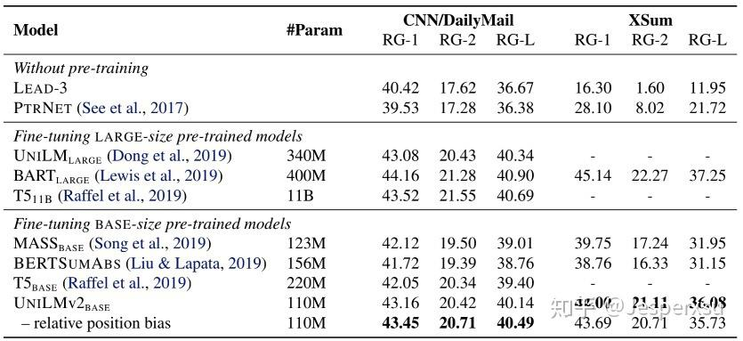 表3.4.2 Summary上实验结果
3.5 PEGASUS¶
3.5.1 简述¶
- 全称：Pre-training with Extracted Gap-sentences for Abstractive Summarization（简称 PEGASUS ，翻译为 天马 ，Google家的 取名艺术 ，很强）
- 时间：2020.07.10
- 团队：Google Research
3.5.2 模型框架¶
- 背景：专门为生成式文本摘要的量身定制的预训练任务尚未被挖掘
Our hypothesis is that the closer the pre-training self-supervised objective is to the final down-stream task, the better the fine-tuning performance.
- 基本思想：PEGASUS在预训练阶段，将输入的文档的重要句子remove/mask，通过其它的句子预测生成，类似于摘要生成的做法。
- 成果：整体实验效果刷新了12项summarization任务；在低资源摘要方面展现惊人性能，仅用了1000个example就超过了6个数据集上的最新结果
本文假设 预训练目标与下游任务越接近 的话，finetune会带来更好更快的表现。
 图3.5.1 模型架构
图3.5.1 模型架构
受词和连续span mask的启发，本选择了mask文本中的整个句子，并且拼接这些 gap-sentences形成伪摘要 。相应位置的Gap-sentences用[MASK1]来替换。 Gap sentences ratio (GSR)用来表示选中的gap sentences占总文档的比例，类似于其它中的mask比例。
为了更接近于摘要，我们选择对于文档来讲，更为重要的的句子。因而就有如下3种方式来选择Gap sentence, 定义n个句子的文档集为 \( D = \{x_{i}\}_{n} \) 。 Random ：随机选择m个句了; Lead ： 选择文档中前面m个句子; Principal 根据重要性选择，选择得分最高的top-m个句子。
独立性选择(Ind) ：句子重要性可根据选中句和其它句子集的ROUGE1-F1来计算，其公式可表示为 \( s_{i} = rouge(x_{i}, D \setminus {x_{i}})，\forall i \)，最终选择得分最高的m个句子 连续性选择(Seq)：通过贪婪最大化选中句子集 \( S\cup{x_{i}} \)与其它句子集 \( D \setminus (S\cup{x_{i}}) \)的ROUGE1-F1值，可通过下式计算
计算 ROUGE1-F1 的方式也可分为两种， Uniq 和 Orig 。 Uniq 先将句子集合处理，即去除重复n-gram，再采用 ROUGE1-F1 计算； Orig 则保留原始句始，允许重复n-gram出现。 因此，两两组合，可得到 Ind-Uniq, Ind-Orig, Seq-Uniq,Seq-Orig 共四种方式，再加上3.1.1所说的 Lead 和 Random ,GSG共有六种选择。
本文MASK的方式共三种:1)只做MLM,类似BERT,以输入文本的15%的tokens, 80%的被替换为[MASK2], 10%的被随机的token替换 10%未发生变化。 此种情况 在finetune下游任务时，Transfomer decoder部分共享encoder部分参数 ; 2)不采用MLM, 只用GSG ，以[MASK1] token去mask选中的重要句子; 3)GSG方式MASK选中的重要句子，然后在未选的句子中，15%的token采用MLM去MASK。
 表3.5.1 PEGASUS实验结果
表3.5.1 PEGASUS实验结果
4 摘要提取数据集¶
4.1 常用中文数据集¶
- LCSTS : 来源于新浪微博数据集,用于标题生成
- CSL : 中文科技文献数据集
- NLPCC : 数据集来源于新闻领域，是NLPCC2017举办提供的任务数据，可用于单文本摘要。
4.2 常用英文数据集¶
- CNN/DailyMail 作为单文本摘要语料库，每篇摘要包含多个摘要句。 数据集最初是从美国有限新闻网（CNN）和每日邮报网（Daily Mail）收集的约100万条新闻数据作为机器阅读理解语料库。后来进行简单改动，形成用于单文本生成式摘要的语料库。将每篇新闻的要点按原文中出现的顺序组成多句的摘要，每个要点看成是一个句子。
- Gigaword 有 950w 篇新闻文章，数据集用 headline 来做 summary，即输出文本，用 first sentence 来做 input，即输入文本，属于单句摘要的数据集。
- XSUM 由2010年到2017年专业人士写的227k篇BBC文章组成的数据集。
| 数据集名称 | 语言 | 摘要方式 | 数据规模 | 适用方法 | 来源 |
|---|---|---|---|---|---|
| LCSTS | 中文 | 生成式摘要 | 2 400 000 | 单文本摘要 | |
| NLPCC | 中文 | 生成式摘要 | 50 000 | 单文本摘要 | |
| CNN/Daily Mail | 英文 | 抽取式摘要/生成式摘要 | 300 000 | 单文本摘要 | |
| Gigaword | 英文 | 生成式摘要 | 4 000 000 | 单文本摘要 | |
| DUC/TAC | 英文 | 抽取式摘要/生成式摘要 | 单文本摘要/多文本摘要 |
参考¶
凡本网注明"来源：XXX "的文/图/视频等稿件，本网转载出于传递更多信息之目的，并不意味着赞同其观点或证实其内容的真实性。如涉及作品内容、版权和其它问题，请与本网联系，我们将在第一时间删除内容！
作者: Espersu
来源： https://zhuanlan.zhihu.com/p/338154240